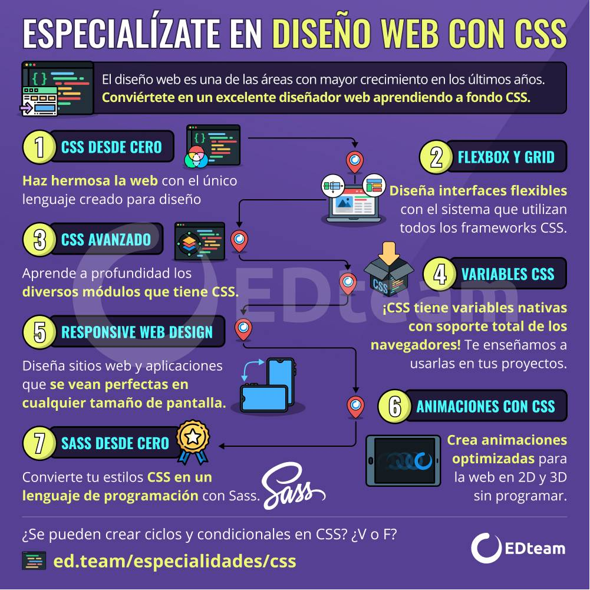
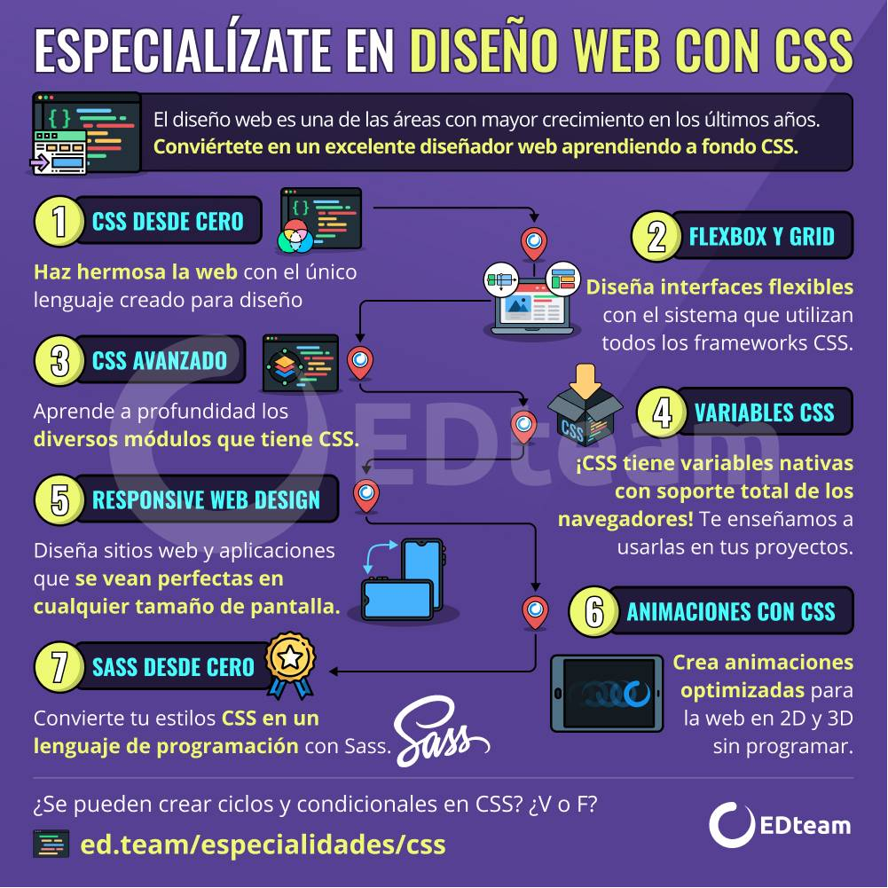

Recurso en Imagen
A continuación, podrá evidenciar una imagen que le permitirá reconocer algunas de las funciones sobre los Fundamentos de CSS
Biblografía
Alvaro, C. (2022). Curso: CSS Desde Cero. Recuperado de: https://ed.team/cursos/css
A continuación, podrá escuchar un audio en el cual podrá empaparse más sobre los Fundamentos de CSS
Anyi, V. R. (2022).
A continuación, podrá evidenciar una imagen que le permitirá reconocer algunas de las funciones sobre los Fundamentos de CSS
Alvaro, C. (2022). Curso: CSS Desde Cero. Recuperado de: https://ed.team/cursos/css